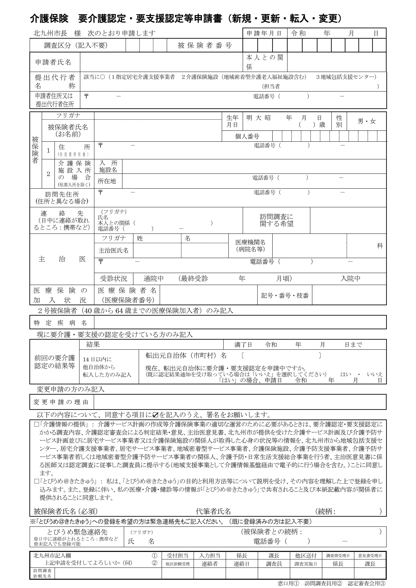

① 被保険者証を読み取る
おすすめ：スマホの文字認識でコピーして貼り付ける
- iPhone：カメラで証を写し、右下に出る［テキスト認識］ボタン → 「すべてを選択」→「コピー」
Android：Googleレンズで証を写し、「テキスト」→「すべて選択」→「コピー」 - 下の枠を長押しして「ペースト」（貼り付けると自動で②に入力されます）
または：このアプリで写真から読み取る（精度は低め）
文字認識：待機中
写真の上を指（マウス）でなぞって、番号・住所・氏名・生年月日の欄だけを囲むと精度が上がります。囲まなければ写真全体を読みます。
読み取った文字（確認用）
写真は端末の中だけで処理され、外部には送信されません（文字認識の部品はページを開いたときに自動で準備します。初回のみネット接続が必要です）。
読み取りは完璧ではありません。②で必ず目で確認・修正してください。黄色の欄は自動入力された項目です。
② 内容を確認・入力
同意の☑と「被保険者氏名（必須）」の署名、代筆者氏名は印字しません。印刷後に手書きで記入してください。
入力内容は保存されません（個人情報保護のため）。ページを閉じると消えます。
※「覚える」にチェックした提出代行者の番号と担当者だけは、この端末に残ります。
③ 印刷
申請書の枠ごと白紙のA4に印刷します（位置合わせは不要です）。印刷画面では「用紙A4・倍率100%（ページに合わせない）・余白なし・ヘッダーとフッターなし」にしてください。
データで残したいときは、印刷画面のプリンターで「PDFに保存」を選ぶと、記入済みの申請書がPDFになります。
詳細設定（通常は使いません）
全体ずらし 横mm
縦mm
文字サイズmm
印刷倍率%
